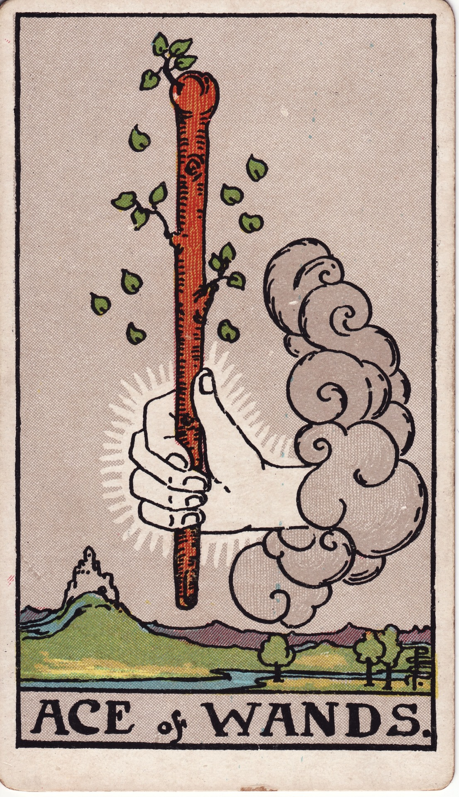

Ace of Wands

Luck: A small spark of momentum returns. Things may start to move forward again, even if just in the early stages.
Mood: A shift from hesitation to motivation. Not fully confident yet, but there’s a growing sense of readiness to act.
Possible Event: I might gain clarity on something that was previously uncertain, leading me to finally start or make progress on a task.
Luck: The day felt more directed compared to before. Things began to take shape instead of staying stuck in thought.
Mood: I felt a subtle but noticeable boost in motivation. It wasn’t overwhelming, but enough to help me move forward.
Event: I started to see a clearer structure and direction for my essay, which helped me begin outlining it. I also finished Jenny’s assignment. It felt like things were finally starting to click after a few days of hesitation.